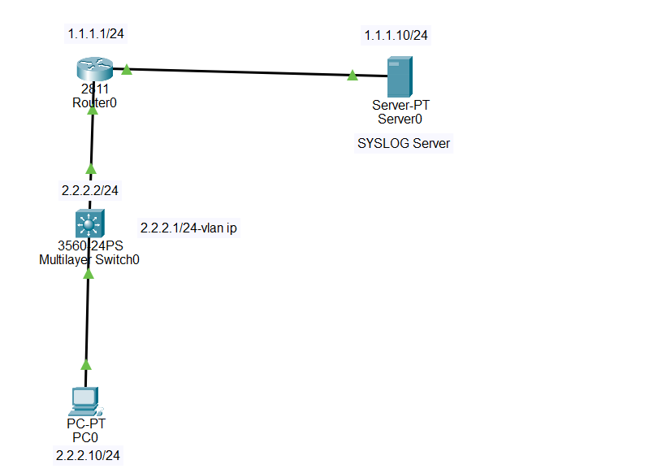

A Syslog Server is a centralized server that collects and stores log messages generated by network devices such as routers and switches.
By default, Cisco IOS displays messages on the console. With Syslog, these messages can be sent to a remote server for:

Server ip :
ip address 1.1.1.10
Subnet mask: 255.255.255.0
gatway :1.1.1.1
PC ip :
ip address 2.2.2.10
Subnet mask: 255.255.255.0
gatway :2.2.2.2
Router:
Router(config)#int f0/0
Router(config-if)#ip add 1.1.1.1 255.255.255.0
Router(config-if)#no sh
Router(config-if)#exit
Router(config)#int f0/1
Router(config-if)#ip add 2.2.2.2 255.255.255.0
Router(config-if)#no sh
Router(config-if)#exit
Switch:
Switch(config)#int vlan 1
Switch(config-if)#no sh
Switch(config-if)#
%LINK-3-UPDOWN: Interface Vlan1, changed state to down
%LINEPROTO-5-UPDOWN: Line protocol on Interface Vlan1, changed state to up
Switch(config-if)#ip add 2.2.2.1 255.255.255.0
Switch(config-if)#ip default-gateway 2.2.2.2
Switch(config)#logging host 1.1.1.10
Switch(config)#service timestamps log datetime msec